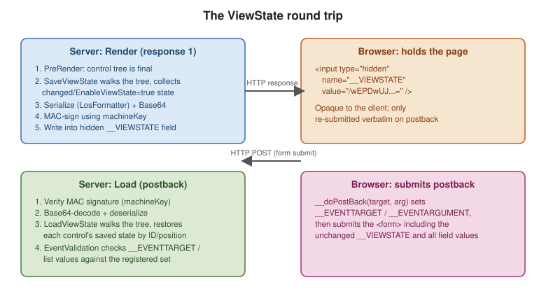

ViewState and Control State
|
This content was generated with the assistance of AI and should be verified against the official documentation before being relied on in production. |
ViewState is the mechanism that makes a Web Forms page feel stateful across the fundamentally stateless HTTP request/response cycle. Understanding exactly what it stores, when, and at what cost is essential to both using it correctly and to knowing when to turn it off.
What __VIEWSTATE actually is
At the end of the rendering stage, every control in
the tree with EnableViewState = true contributes its changed properties to a single object graph. That graph
is serialized (via the internal LosFormatter/ObjectStateFormatter), Base64-encoded, optionally MAC-signed,
and written into a hidden form field:
<input type="hidden" name="__VIEWSTATE"
value="/wEPDwUJODU2NDcxMzY5D2QWAgIDD2QWAgIBD2QWAgIBDw8WAh4EVGV4dAUFSGVsbG9kZGRc..." />On the next postback, ASP.NET reads that field, verifies its signature, deserializes it, and walks the control tree applying each stored value back onto the matching control — matched by control ID and position in the tree, which is exactly why dynamically added controls must be re-created identically, with the same ID, on every postback.

The __doPostBack hidden-field mechanism
Alongside __VIEWSTATE, every page with a server <form> gets an injected __doPostBack JavaScript function
and two more hidden fields, __EVENTTARGET and __EVENTARGUMENT:
// Injected by ASP.NET into every page with a server-side <form runat="server">
function __doPostBack(eventTarget, eventArgument) {
var theform = document.forms['form1'];
theform.__EVENTTARGET.value = eventTarget;
theform.__EVENTARGUMENT.value = eventArgument;
theform.submit();
}A native <asp:Button> submits the form directly; a LinkButton, a GridView sort link, or any control that
is not natively a submit element instead renders an onclick="javascript:__doPostBack('GridView1','Sort$Name')"
handler so the server can tell which control, and which logical action, triggered the postback.
ViewState vs. control state
Control state is a smaller, separate bucket, introduced because ViewState is user-disableable
(EnableViewState="false") but some state is required for a control simply to function correctly — for
example, which tab of a MultiView is active. Control state cannot be turned off and does not respect
EnableViewState; a custom control opts in by overriding SaveControlState/LoadControlState and calling
Page.RegisterRequiresControlState(this):
public class TabStrip : WebControl
{
private int _activeIndex;
protected override void OnInit(EventArgs e)
{
base.OnInit(e);
Page.RegisterRequiresControlState(this);
}
protected override object SaveControlState() => _activeIndex;
protected override void LoadControlState(object savedState)
{
_activeIndex = savedState is int i ? i : 0;
}
}Both control state and ViewState travel inside the same __VIEWSTATE field on the wire; the distinction is
purely about which server-side save/load path a value goes through and whether EnableViewState="false"
excludes it.
EnableViewState and ViewStateMode
EnableViewState (page- or control-level, bool) is the on/off switch; a page-level EnableViewState="false"
suppresses ViewState for the whole tree. ViewStateMode (ASP.NET 4+, Enabled/Disabled/Inherit) is finer:
it lets a page default to Disabled while re-enabling ViewState on just the controls that actually need it,
which is the recommended pattern for minimizing page weight without hunting down every control individually:
<%@ Page ViewStateMode="Disabled" ... %>
...
<asp:GridView ID="OrdersGrid" runat="server" ViewStateMode="Enabled" ... />When values survive, and when they do not
-
Simple property values a control sets in markup (
Text="Hello") do not need ViewState to survive postback — they are re-applied from markup on every request regardless. -
Values changed in code after the control has been initialized (e.g.
Label1.Text = ...set inPage_Loadin response to something other than markup) only survive subsequent postbacks if ViewState is enabled for that control, because there is nothing else that would re-apply them. -
Values read from a data source and bound via
DataBind()do not automatically persist through ViewState unless the control’s own state tracking captures them (most bound properties likeGridViewrow data are not stored in ViewState by default — rebinding on every postback, as covered separately, is the normal pattern).
Page-weight cost, and how to measure it
ViewState is pure HTML-response bloat: every enabled control’s state round-trips on every postback whether
or not it changed. A GridView with many rows and EnableViewState="true" can easily add tens or hundreds of
kilobytes to every request. To measure it:
-
View source and look at the
__VIEWSTATEfield’s length directly, or -
Enable tracing (
Trace="true"in@Page, or<trace enabled="true" />inweb.config) and read the page trace (see Deployment and Diagnostics), which reports per-control ViewState size under Control Tree, or -
Use browser devtools' Network tab to compare response sizes with ViewState enabled vs. disabled on a given control.
The fix is almost always ViewStateMode="Disabled" at the page level plus explicit opt-in on the handful of
controls that genuinely need it, combined with rebinding data on every request rather than relying on
ViewState to remember it.
ViewStateUserKey, MAC validation, machineKey, and event validation
-
ViewStateUserKey— set inPage_Initto a per-user value (e.g.Session.SessionIDor the authenticated username) to bind a page’s ViewState to the user who generated it, mitigating one-click CSRF attacks that replay another user’s ViewState-carrying form:protected override void OnInit(EventArgs e) { base.OnInit(e); ViewStateUserKey = User.Identity.IsAuthenticated ? User.Identity.Name : Session.SessionID; } -
MAC validation — ViewState is signed (
EnableViewStateMac, on by default and not to be disabled) so tampering on the client is detected server-side and rejected before deserialization. -
machineKey— the actual signing/encryption key material, configured inweb.config. In a web farm every server must share the samemachineKey, or ViewState (and Forms authentication tickets) generated by one server will fail validation on another:<system.web> <machineKey validationKey="AUTOGENERATED_OR_EXPLICIT_HEX" decryptionKey="AUTOGENERATED_OR_EXPLICIT_HEX" validation="HMACSHA256" decryption="AES" /> </system.web> -
EnableEventValidation— a separate mechanism (__EVENTVALIDATIONhidden field) that records the set of controls and list values legitimately postable on a given render, and rejects a postback that references a value never actually offered (e.g. aDropDownListoption injected by a tampered client). It is on by default; disabling it (EnableEventValidation="false") removes a real protection and should only be done for controls whose items are added dynamically in a way that legitimately does not match what was rendered, understanding the trade-off.
See Understanding ASP.NET View
State and <machineKey>
Element for the authoritative reference, and
Security for the role of machineKey beyond ViewState (Forms
authentication tickets, cookie protection).
How a control tracks changes: StateBag and TrackViewState
ViewState is not a snapshot of the control tree. Each control owns a StateBag (the ViewState property), a
dictionary that records a value only if it is set while tracking is on. Tracking starts when the page calls
TrackViewState on the tree, right at the end of the Init stage; values assigned before that point (in markup
or in Init) are treated as the control’s declared defaults and are re-created from markup on every request,
so they cost nothing on the wire. Only values assigned afterwards are marked dirty and serialized at
SaveStateComplete.
This is the reason a property of a custom control stores its value in ViewState rather than in a plain field: a
field is rebuilt on every request, while ViewState["Quantity"] is restored by the framework before Load:
public class QuantityPicker : WebControl
{
public int Quantity
{
get { return (int)(ViewState["Quantity"] ?? 1); }
set { ViewState["Quantity"] = value; }
}
}The same mechanism explains an everyday surprise: a Label whose Text is assigned in Page_Init shows the
assigned text again after every postback only because markup or Init runs again, not because ViewState
preserved it; assigned in Page_Load, it survives only if EnableViewState is on for that label.
Worked example: measuring and shrinking the order grid
A realistic offender is the order list: a GridView of a few hundred rows, bound on the first request and kept in
ViewState "for convenience". The page below reports how large the serialized state is, using the
SavePageStateToPersistenceMedium hook that every page exposes and the page-level trace, so the number can be
compared before and after each change:
<%-- Orders/OrderList.aspx --%>
<%@ Page Language="C#" AutoEventWireup="true" Trace="true"
CodeBehind="OrderList.aspx.cs" Inherits="WebFormsApp.Orders.OrderList" %>
<!DOCTYPE html>
<html>
<head runat="server"><title>Orders</title></head>
<body>
<form id="form1" runat="server">
<asp:GridView ID="OrdersGrid" runat="server" AutoGenerateColumns="false">
<Columns>
<asp:BoundField DataField="Id" HeaderText="Order" />
<asp:BoundField DataField="Customer" HeaderText="Customer" />
<asp:BoundField DataField="Total" HeaderText="Total" DataFormatString="{0:C}" />
</Columns>
</asp:GridView>
<asp:Button ID="RefreshButton" runat="server" Text="Refresh" />
</form>
</body>
</html>// Orders/OrderList.aspx.cs
using System;
using System.IO;
using System.Linq;
using System.Web.UI;
namespace WebFormsApp.Orders
{
public partial class OrderList : Page
{
protected void Page_Load(object sender, EventArgs e)
{
if (!IsPostBack)
{
OrdersGrid.DataSource = Enumerable.Range(1, 300)
.Select(i => new { Id = i, Customer = "Customer " + i, Total = i * 12.5m })
.ToList();
OrdersGrid.DataBind();
}
}
protected override void SavePageStateToPersistenceMedium(object state)
{
var formatter = new LosFormatter();
using (var writer = new StringWriter())
{
formatter.Serialize(writer, state);
Trace.Write("ViewState", "serialized size: " + writer.GetStringBuilder().Length + " characters");
}
base.SavePageStateToPersistenceMedium(state);
}
}
}Run it, press Refresh once, and read the trace at the bottom of the page (or /trace.axd when <trace
enabled="true" /> is set, see Deployment and
Diagnostics). With the grid left at its defaults, the postback re-saves every cell it rendered into ViewState — GridView stores its rows so that edit and paging events can be matched to them — and the count grows
linearly with the row count. Three changes shrink it, in increasing order of effort:
-
Set
EnableViewState="false"on theGridView, and bind on every request instead of only on the first, so thatPage_LoadbecomesOrdersGrid.DataSource = ...; OrdersGrid.DataBind();without theIsPostBackguard. The grid then contributes almost nothing; the cost is that edit/select events needDataKeyNamesand a rebind inside the event handler. -
Use
ViewStateMode="Disabled"on the page andViewStateMode="Enabled"only on the controls that must remember something between requests, as shown earlier on this page. -
Move the state off the wire altogether with a server-side page-state persister.
Keeping ViewState on the server
Page.PageStatePersister decides where the serialized state goes. The default HiddenFieldPageStatePersister
writes it into the page. SessionPageStatePersister stores it in Session and sends only a short identifier in
the hidden field, trading response size for server memory:
public partial class OrderList : System.Web.UI.Page
{
protected override PageStatePersister PageStatePersister
{
get { return new SessionPageStatePersister(this); }
}
}<system.web>
<sessionPageState historySize="9" />
</system.web>historySize is the number of past ViewState snapshots kept per session so the browser’s Back button still
posts back against a state the server remembers; each snapshot is a full copy, so the setting directly multiplies
memory use per user. A session-backed persister also inherits every property of the session mode in use (see
State Management and Caching): out-of-process modes
require the ViewState graph to be serializable, and an expired session means the next postback fails with an
invalid-ViewState error.
Where should this value live?
The same decision keeps recurring when auditing a page, and it can be written down once:
Encrypting ViewState
MAC validation proves ViewState was not modified; it does not hide its contents. The state of a page can
include items bound from a database (keys, internal identifiers), and the Base64 text can be decoded by anyone
who reads the page source. ViewStateEncryptionMode closes that gap:
<%@ Page ViewStateEncryptionMode="Always" ... %><system.web>
<pages viewStateEncryptionMode="Auto" enableViewStateMac="true" />
</system.web>Auto (the default) encrypts only when a control in the page calls Page.RegisterRequiresViewStateEncryption();
Always encrypts the state of every page; Never is only appropriate when nothing sensitive can
ever land in the state. Encryption uses the decryptionKey of the shared machineKey, so the farm rule above
applies unchanged. Sensitive values should still not be placed in ViewState at all: encryption is a second
line of defense, not a license to store a connection string or a discount rule in a hidden field.